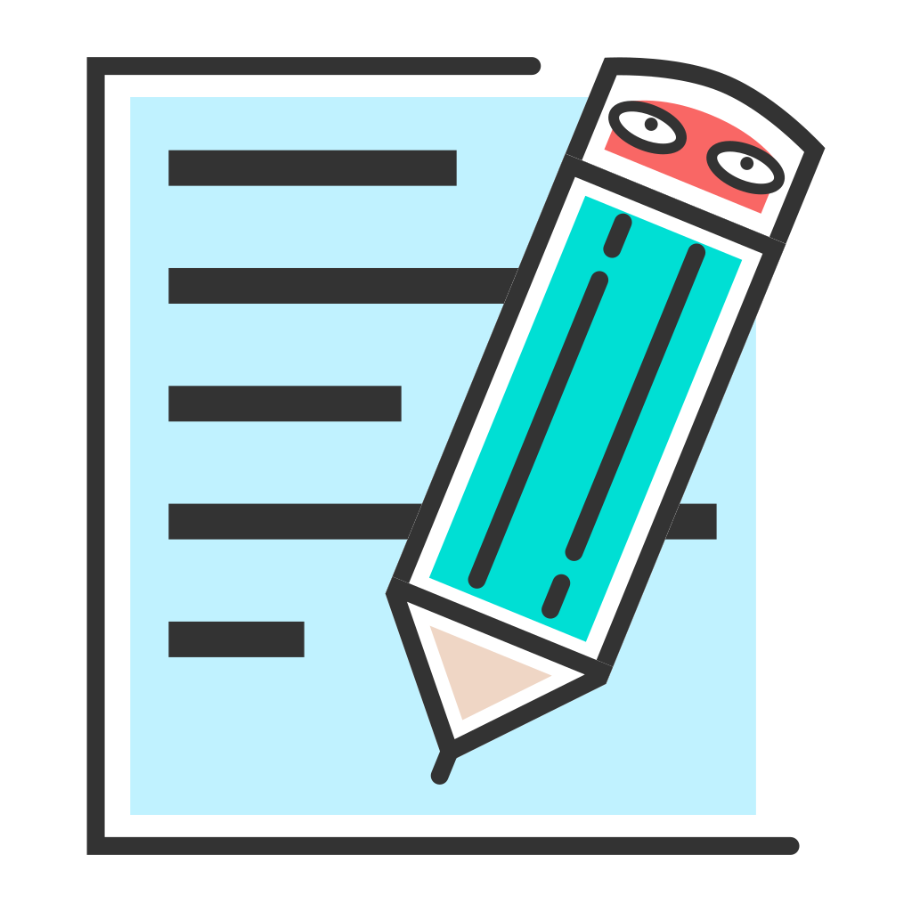

工作日迹一款本地优先、AI 辅助的工作记录与周报工具 —— 帮你把每天的痕迹，沉淀成可复用的资产。
工作日迹不试图成为又一个笔记软件。它只解决一件事：让「记工作」和「写周报」这件每周必做、却最让人头疼的事，变得轻松且可持续。从一个统一输入框开始，AI 把碎片整理成结构，周末把结构变成周报 —— 全程数据留在你手里。
工具应当服务于人，而不是反过来索取你的数据
记录与周报默认存于你自己的电脑，透明、可备份、可迁移，不依赖任何云服务。
没有账号体系、没有云端数据库。API Key 与密码进系统钥匙串，你随时可整体导出。
只在调用大模型时发送必要片段，绝不用于分析或训练；也支持本机 Ollama 完全离线。
代码公开、下载免费，推送标签即自动打包，社区可审计、可共建。
附件是一次性原料，仅本地临时处理并自动清理，不会被同步到任何地方。
通过 WebDAV 多账号备份，换设备也能保持记录一致，永不丢失。
从「想到什么」到「周报归档」，无需在多个软件间切换
文字键入，图片 / Word / PDF 拖拽或粘贴即识别，一个入口收口所有碎片。
按「职场助理 / 日程秘书」拆成时间、内容、进度、相关人字段，忠实原文不编造。
生成「成果 / 进行中 / 计划 / 风险」四板块，可在线编辑并导出 Word / PDF。
年度热力图 + 月历联动，每日工作量与待办密度一目了然。
OpenAI 兼容协议 + 本地 Ollama，多模型按用途分工并测试连通性。
坚果云 / InfiniCLOUD / 自建，多账号切换、自动认证、跨设备同步。
不同角色，同一个顺手的工作流
琐事多、怕漏报，随手记一笔，周报自动有料。
用统一结构看成员进展，周会前先瞄热力图。
长周期任务拆成记录与待办，进度不再靠回忆。
本地沉淀工作资产，向客户交付时有据可查。
为长期使用而生
Rust 后端 + React 前端，安装包小、启动快、资源占用低。
记录以 JSON 落盘，无数据库依赖，随时可被任意工具读取与迁移。
内置更新检查，发现新版本一键下载安装并重启；托盘驻留不打扰。
推送版本标签即触发 GitHub Actions，自动产出 macOS / Windows 安装包。
WebDAV Basic + Digest 自动切换，兼容主流网盘与自建服务。
开源代码与更新日志公开，安全与迭代对社区透明。